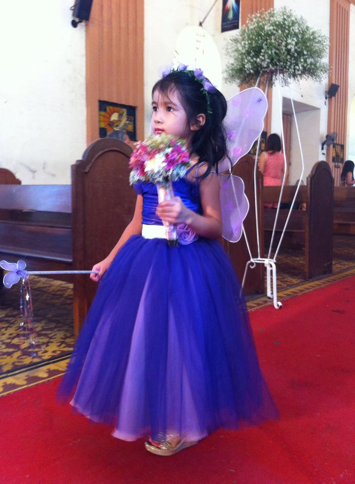
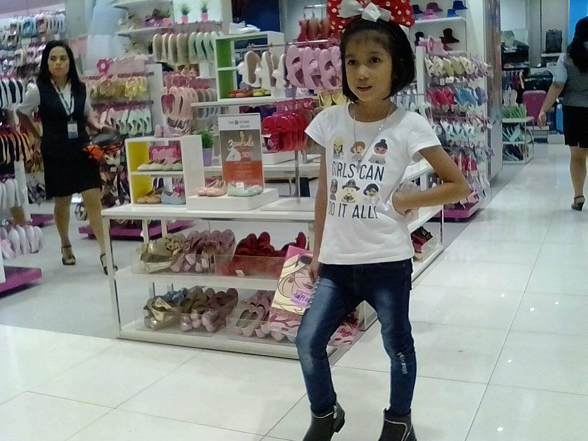
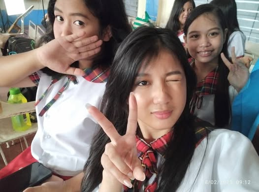

Here’s a little throwback to my school journey:
Preschool
Honestly, preschool was just vibes. It was easy at the time but I don’t remember much of it. I learned my ABCs, made random crafts. It was all about having fun and making friends.
Elementary
This is when things started getting hard—math, group projects, and discovering that I actually liked art. I was that kid who doodled all over their notebooks instead of paying attention. In the end, I failed some of my subjects.
Junior High School
JHS was a mix of chaos and glow-ups. The schoolwork got harder, but so did my passion for Visual Arts. I spent hours sketching, trying new styles, and wondering if I could actually turn this into something more. It’s where I started figuring myself out.
My journey in 10 SPA as a Visual Arts student has been an incredible experience filled with creativity and growth. My classmates are wonderful, making every day more exciting and inspiring. I have two real best friends who have been with me through everything. Back in Grade 9, I had only one best friend, but she left me because she was scared of my dad. It was a painful experience, but in the end, I found true friendship. The two real besties I have now became my friends, and over time, our bond grew even stronger. They've shown me what real friendship looks like—supporting, understanding, and always there no matter what.